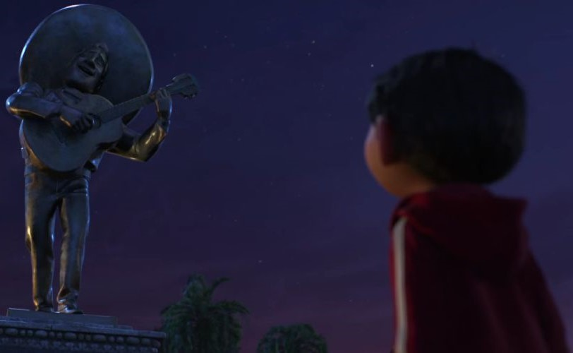

Guanajuato
O centro histórico de Guanajuato foi a inspiração para a Terra dos Mortos na animação.
Pontos Turísticos
Plaza Del Ropero
Aqui vale uma foto com a estátua do famoso músico Jorge Negrette, que inspirou a criação
do meu ídolo, o Ernesto de la Cruz. Em 2005, uma estátua de bronze em tamanho natural do ícone foi inaugurada,
A estátua é obra do guanajuatense Raul Jaramillo e foi inaugurada pelo governador Juan Carlos Romero Hicks.
Chegando lá: Cantarranas s/n, Centro, Guanajuato, 36000

Hospedagem
Casa Florencia
Conde de Valenciana No. 117, Barrio de La Presa, Guanajuato, 36094.
(473) 688 0477
$103 - $274
Mesón de La Fragua
Tepetapa 46, Centro, Guanajuato, 36000.
(473) 732 2715
$33 - $50
Real Guanajuato
Positos 39, Centro, Guanajuato, 36000.
(473) 732 9650
$40 - $67
Restaurantes
Costal Cultura Cafetera
Calle San Jose 4 Zona Centro, Guanajuato 36000 Mexico
+52 473 102 7252
Segunda à Sábado das 14h às 22h, Domingo das 14h à 21h
https://www.facebook.com/costalcc/
Casa Mercedes
Calle de Arriba No. 6 San Javier, Guanajuato 36240 Mexico
+52 473 733 9059
https://www.casamercedes.com.mx/
Terça à Sabado 14h às 22h, Domingo 14h às 18h
La Taberna de Diego y Frida
35 Positos Bajos Zona Centro Positos 35 Bajos, Zona Centro, Guanajuato 3600 Mexico
+52 473 733 1036
https://www.facebook.com/La-Taberna-de-Diego-Y-Frida-Restaurante-187681171307471/
Quinta à Sábado 14h 23h30, Domingo das 14h às 20h, Segunda das 14h às 21h
Paracho de Michoacán
Conhecida como Cidade dos Violões, inspirou o brilhante design do meu violão.
A vila de Paracho é famosa pela produção artesanal das melhores guitarras do mundo, não só pela sua tradição
centenária de artesanato transmitida de geração em geração, mas também pelo material que utilizam para as elaborar:
a madeira de cedro. O museu da guitarra mostra uma amostra das melhores obras dos artesãos locais, bem como
uma exposição sobre a história dos primeiros fabricantes de violões. Um festival nacional "Feria de La Guitarra"
é realizado em Paracho uma vez por ano, geralmente na segunda semana de agosto. Com duração de nove dias tendo sua
mostra de cultura, gastronomia e tradições.
Pontos Turísticos
Praça
A praça é o ponto de encontro dos artesãos, que se reúnem todos os fins de semana vestidos com trajes tradicionais para encantar os turistas e vender suas criações, incluindo, é claro, os renomados violões artesanais da cidade.
Chegando la: 20 de novembro s / n, Col. Centro. 60250 Paracho de Verduzco, Paracho
Mercado municipal
O mercado municipal é uma visita obrigatória se quiser experimentar os pratos mais tradicionais do Paracho. É aqui que os habitantes locais compram os ingredientes mais frescos para preparar as suas refeições.
Chegando la: 20 de novembro s / n, Col. Centro. 60250 Paracho de Verduzco, Paracho
Centro cultural
No Centro Cultural do Paracho você encontra mostras culturais, além de peças de importantes eventos da cidade do Paracho, como o Concurso de Brinquedos Populares e os Concursos de Construtores de Guitarras.
Chegando la: Francisco de Castro s / n, Col. Centro. 60250 Paracho de Verduzco, Paracho
+52 (423) 525 0077
Horario: Segunda a Sabado 08h00-18h00
Domingo Fechado
Capela da Imaculada Conceição de Paracho
Esta capela data do século XVI. O seu interior alberga retábulos, pinturas e um coro de grande valor histórico e beleza ímpar. O local foi restaurado pelo Instituto Nacional de Antropologia e História (INAH, por sua sigla em espanhol) com a ajuda de várias contribuições econômicas. Ele está localizado no Huatápera.
Chegando la: Lic. Eduardo Ruiz s / n, Col. Centro. 60250 Paracho de Verduzco, Paracho
Hospedagem
Hotel Santa Fe Paracho
http://www.hotelsantafeparacho.com
+52 (423) 525 0185
hotelsantafe.paracho@gmail.com
From $400 MXN - 3 estrelas
Av. 20 de Noviembre #791, Col. Centro. 60250 Paracho de Verduzco, Paracho
Paracho Hotel and Inn
hotelmesonparacho.wordpress.com
+52 (423) 525 1914
From $300 MXN
Getting there
Morelos #5, Col. Centro. 60250 Paracho de Verduzco, Paracho
Hotel San Miguel
Av 20 de Noviembre #735, Centro, Paracho 60250 México
Restaurantes
Ánima Pinta
Calle Licenciado Eduardo Ruiz 39, Paracho 60250 México
+52 452 113 0311
Horário de funcionamento: todo dia 5:00 PM - 9:00 PM
COZINHA: Mexicana
https://www.facebook.com/animapinta